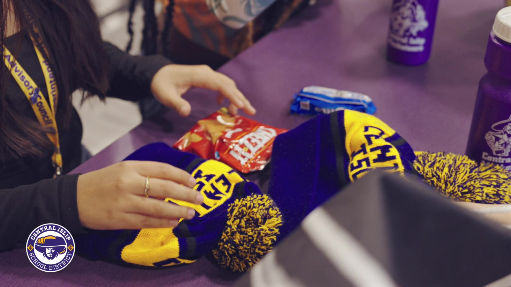

Most of the conversation around attendance and hall passes is about catching what students do wrong. Who's late, who's cut class, who's been out too long. That matters, but it's only half the picture.
The other half is rewarding the students who do the right thing. That's what the MOOV Tap Store is for.
Turning good habits into something students want

The Tap Store rewards students for the behavior schools want to see. Getting to class on time. Getting there early. And showing up to school at all.
Every tap becomes a chance to earn something. A student who arrives on time builds up rewards they can actually use, which turns a daily expectation into a small win they look forward to. It's the same idea behind any good PBIS program, positive behavior gets recognized, but here it runs automatically off the taps students are already doing.
That flips the tone of the whole system. Instead of only hearing about attendance when they're in trouble, students get a reason to show up and be on time that feels like a game, not a warning.
Why rewarding students works
This isn't just about making school more fun, though it does that. Recognizing positive choices changes behavior.
When students know their good habits are seen and rewarded, more of them show up and get to class on time. Meghan Stern, principal at Islip Middle School, told us her students respond to exactly that kind of recognition:
"We're really excited about the positive piece. In speaking with some of our student leaders, they are as well to be recognized for making those good positive choices, getting to school on time, getting to class on time, and knowing that in addition to the academic rewards, there's also little prizes at the end of the tunnel for them as well."
Better attendance and punctuality lead to more time in class, and more time in class leads to better outcomes. The Tap Store is a low-effort way to move all of that in the right direction, without adding anything to a teacher's plate.